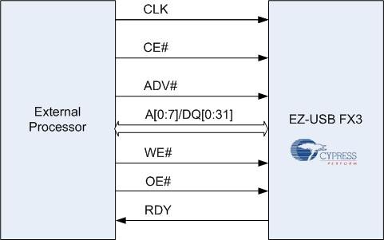
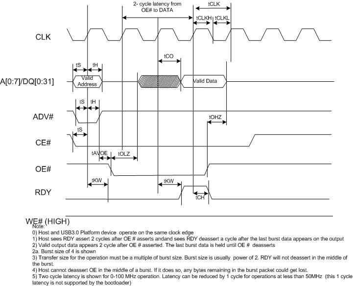
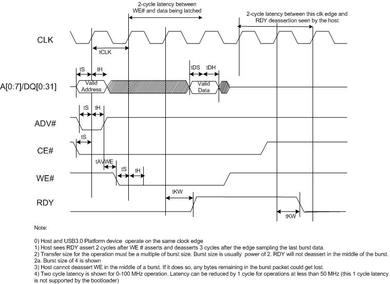
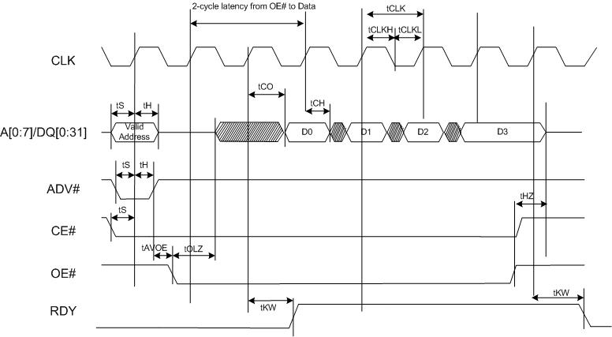
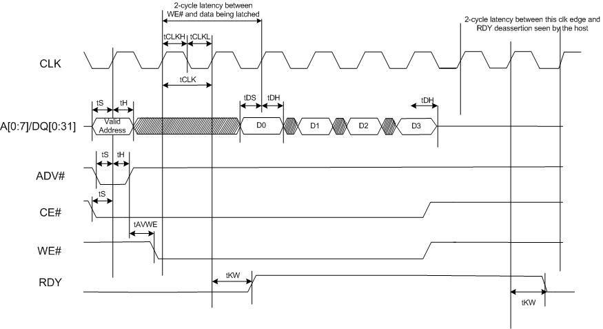

Introduction
One of the key features of EZ-USB® FX3™ is the flexibility and programmability of the General Programmable Interface (GPIF™II). GPIF™II is a programmable state machine that enables a flexible interface to adapt to the processor interface required by the user. GPIF™II state machine is defined by a set of programmable registers. These registers are to be configured by the firmware application running on the FX3. The register configuration that programs GPIF™II for a specific interface can be generated by the software tool GPIF™II Designer. This document provides details on how to generate and use Synchronous Address Data Multiplexed Interface on GPIF™II using the tool.
Synchronous Address Data Multiplexed Interface
Feature Highlights

Figure 1. Synchronous Address Data Multiplex Interface Diagram
Synchronous Address Data Multiplexed interface is ideal for applications where an external processor or device needs to perform data read/write accesses to FX3's buffers or registers. Figure 1 shows the interface diagram for the Synchronous Address Data Multiplexed interface.
Programming GPIF™II as Synchronous Address Data Multiplexed
The set of register values that programs the GPIF™II interface as Synchronous Address Data Multiplexed is generated as a data structure supported the FX3 firmware framework API. The software tool GPIF™II Designer and the firmware framework library are part of the EZ-USB® FX3™ Software Development Kit. GPIF™II Designer generates a header file containing data structures and macros that seamlessly integrates with the FX3 firmware framework API. A step by step procedure to use GPIF™II Designer to configure FX3 as Synchronous Address Data Multiplexed is as follows
Configurable Parameters
Following parameters of the interface can be modified to suite the target environment. To make changes, open the sync_admux using GPIF™II Designer as mentioned in step 1. The configurable parameters and available options are provided on the left side of the Customization Tab.
FX3 peripherals used: SPI, UART,I2C,I2S can be selected.
Data bus width: Data bus width of GPIF II can be 16 bit or 32 bit. 32 Bit data bus width is not supported if SPI is selected.
Burst Word Count: Maximum number of words that can be transferred at a time in burst access.
Pin mapping: Mapping of the interface signals (CE#, WE#, ADV# and RDY) to the FX3 pin
connections can be modified.
Note: To swap pins currently allocated pin must be freed. A pin can be freed by allocating
to any other available pin temporarily.
Interface Description & Timing
Interface provides four different slave accesses.
Single Read
For Single Read Operation, both CE# and OE# are asserted. Data is driven on the interface after two clock cycle of assertion of OE. RDY is made high to validate the data on the interface. The addresses must be latched prior to the write operation. ADV# must be low during the Address phase of operation. ADV# must be high during the Data phase of operation. Register is read by making the msb bit of address to one. Figure 2 shows the timing and sequence for Synchronous Address Data Multiplexed Single Read accesses.

Figure 2 Timing Diagram - Synchronous Address Data Multiplexed Single Read
Single Write
For Single Write Operation, both CE# and WE# are asserted. Valid data need to be placed on the bus after 2 clock cycles. RDY signal is used to acknowledge for write operation. The addresses must be latched prior to the write operation. ADV# must be low during the Address phase and high during the Data phase of operation. Register is written by making the msb bit of address to one. Figure 3 shows the timing and sequence for Synchronous Address Data Multiplexed Single Write accesses.

Figure 3 Timing Diagram - Synchronous Address Data Multiplexed Single Write
Burst Read
For burst reads, CE# and OE# must be asserted throughout the burst. RDY is made high to validate the data on the interface. The addresses must be latched prior to the burst read operation. ADV# must be low during the Address phase and high during the Data phase of operation. Figure 4 shows the timing and sequence for Synchronous Address Data Multiplexed Burst Read accesses.

Figure 4 Timing Diagram - Synchronous Address Data Multiplexed burst read
Burst Write
For burst write, CE# and WE# must be asserted throughout the burst. RDY signal is used to acknowledge for burst write operation. The addresses must be latched prior to the write operation. ADV# must be low during the Address phase and high during the Data phase of operation. Figure 5 shows the timing and sequence for Synchronous Address Data Multiplexed Burst Write accesses.

Figure 5 Timing Diagram - Synchronous Address Data Multiplexed burst write
Summary
The data presented here is indicative only and must not be seen as a substitute for the full specification from which it is drawn. Please visit Cypress EZ-USB® FX3™ website for detailed and latest Datasheet.
Notice of Disclaimer
© Cypress Semiconductor Corporation, 2012. The information contained herein is subject to change without notice. Cypress Semiconductor Corporation assumes no responsibility for the use of any circuitry other than circuitry embodied in a Cypress Semiconductor product. Nor does it convey or imply any license under patent or other rights. Cypress Semiconductor does not authorize its products for use as critical components in life-support systems where a malfunction or failure may reasonably be expected to result in significant injury to the user. The inclusion of Cypress Semiconductor products in life-support systems application implies that the manufacturer assumes all risk of such use and in doing so indemnifies Cypress Semiconductor against all charges.